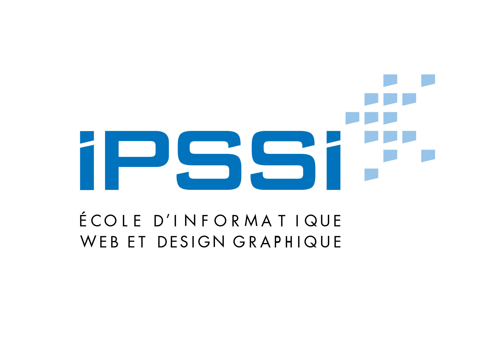

2017/2019
Mastère 1 filière Développement Web, Mobile et Logiciel (niveau II) Ecole IPSSI - Paris (75012)
2015/2017
BTS Services informatiques aux organisations option A solutions d'infrastructure, systèmes et réseaux (SISR)Campus Montsouris (Cerfal) - Paris (75014)
2011/2014
BAC Scientifique, option Science de la vie de la Terre Lycée Le Corbusier - Poissy (78300)
01/09/2017 - 31/08/2019
Alternant chez Capgemini (Consultant Salesforce)
01/09/2016 - 31/08/2017
Alternant chez l’ANSM (Agence National de Sécurité du Médicament et des produits de santé)
01/07/2016 - 31/08/2016
CDD Technicien d'exploitation chez Groupe Vital en prestation chez ALLIANZ